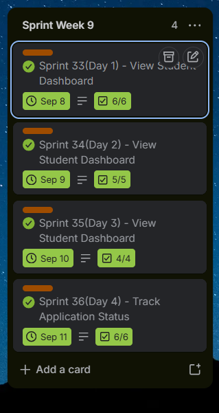
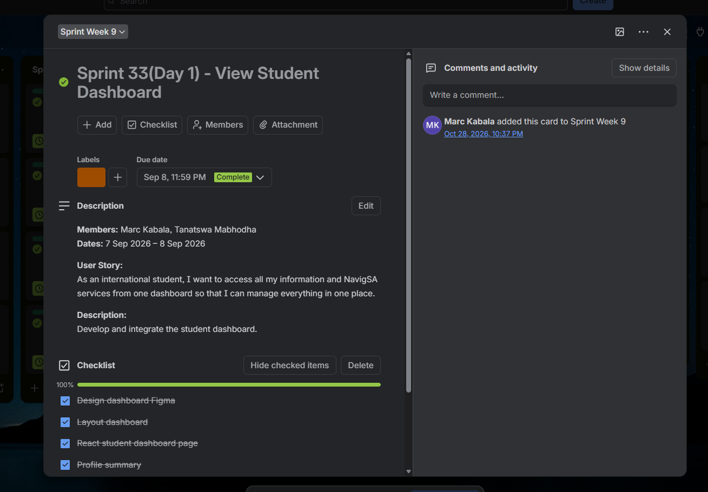

Sprint Backlog
Thirteen weekly sprints made of daily sprint cards, with owners, dates and status.
Section 1: Evidence
Each sprint week on our Trello board is a list, and each day's work is a card named "Sprint N (Day D)". There are 13 sprint weeks and 52 sprint cards, running from 14 July to 9 October 2026. Every card carries a user story (or an enabler task), a checklist of tasks, the people responsible and a due date. All 52 cards are marked complete on the refined board: open the board.
Sprint goals: the team did not write a separate goal for each week. Each week's goal was the user story on its sprint cards, as summarised below.
Download the document
Sprint Backlog (PDF): all 52 sprints by week with dates, members, user story and the linked backlog item. It was rebuilt from the live Trello board on 29 October 2026 and uses the same IDs as the Product Backlog.
Sprint weeks and goals
| Week | Sprint cards | Goal (the user story on the week's cards) | Dates |
|---|---|---|---|
| Week 1 | 1–4 | Business concept | 14–17 Jul |
| Week 2 | 5–8 | Market research | 20–24 Jul |
| Week 3 | 9–12 | Platform design (UI/UX) | 28–31 Jul |
| Week 4 | 13–16 | Prototype presentation, Agile documentation, brand guide and July report | 4–7 Aug |
| Week 5 | 17–20 | System architecture | 11–13 Aug |
| Week 6 | 21–24 | Backend setup | 14–21 Aug |
| Week 7 | 25–28 | Login, trust and verification rules, and backend deployment | 25–28 Aug |
| Week 8 | 29–32 | Backend and database | 1–4 Sep |
| Week 9 | 33–36 | Student dashboard and application status | 7–11 Sep |
| Week 10 | 37–40 | Testing and QA, and the supervisor backend presentation | 14–18 Sep |
| Week 11 | 41–44 | User testing, bug fixes and security | 22–25 Sep |
| Week 12 | 45–48 | Security procedures, multilingual content and educational content | 25 Sep–2 Oct |
| Week 13 | 49–52 | Live platform, monthly report and final testing | 6–9 Oct |
The sprint board




Worked example: Sprint Week 8 (backend and database)
Goal: have a working backend project with a designed database, database models and secure APIs. These four cards are the four tasks of story US-29 "Store my information securely".
| Sprint | Task | Checklist on the card | Owners | Status |
|---|---|---|---|---|
| 29 (Day 1) | Set up the backend project | Set up GitHub branch structure; create a Supabase project; configure project dependencies; configure project packages | Marc | Complete (all 4 items ticked) |
| 30 (Day 2) | Design the database | Design the Student, Provider, Services and Testimonials tables | Marc, Tanatswa | Complete |
| 31 (Day 3) | Implement database models | Create entity classes; define entity relationships; configure the MySQL connection | Marc, Witcha, Nolwazi | Complete |
| 32 (Day 4) | Prepare backend APIs | Create the API project structure; configure REST controllers; configure the service layer; review the backend setup | Marc, Witcha, Nolwazi | Complete |
Note: these four cards are one story split into four tasks. Their dates (1 to 4 September 2026) were added to the board on 29 October 2026, because they were not dated separately before.
All 52 sprint cards
| Sprint | Work | Owners | Dates (2026) | Status | Note |
|---|---|---|---|---|---|
| 1 | Business Concept Definition | Marc, Tanatswa, Witcha, Nolwazi | 14 Jul | Complete | |
| 2 | Define the customer profile | Marc, Tanatswa, Witcha, Nolwazi | 14–15 Jul | Complete | |
| 3 | Presentation Development and Delivery (enabler) | Tanatswa | 16 Jul | Complete | |
| 4 | Prepare the project for execution | Marc, Tanatswa, Witcha, Nolwazi | 17 Jul | Complete | |
| 5 | Community and Market Research | Marc, Tanatswa, Witcha, Nolwazi | 20–21 Jul | Complete | |
| 6 | Identify the target customers | Marc, Tanatswa, Witcha, Nolwazi | 22 Jul | Complete | |
| 7 | Community and Market Research | Marc, Tanatswa, Witcha, Nolwazi | 23 Jul | Complete | |
| 8 | Complete the business concept and presentation | Marc, Tanatswa, Witcha, Nolwazi | 24 Jul | Complete | |
| 9 | Platform Design (UI/UX) | Marc, Nolwazi | 28–29 Jul | Complete | |
| 10 | Platform Design (UI/UX) | Nolwazi | 28–29 Jul | Complete | |
| 11 | Platform Design (UI/UX) | Marc | 30 Jul | Complete | |
| 12 | Platform Design (UI/UX) | Witcha | 31 Jul | Complete | |
| 13 | Platform Design (UI/UX) | Marc, Tanatswa, Witcha, Nolwazi | 4 Aug | Complete | |
| 14 | Agile Project Documentation (enabler) | Marc, Tanatswa, Witcha, Nolwazi | 4–5 Aug | Complete | |
| 15 | Brand Guide and Sprint Board | Marc, Tanatswa, Witcha | 5–6 Aug | Complete | |
| 16 | Monthly Project Reports, July (enabler) | Marc, Tanatswa, Witcha, Nolwazi | 6–7 Aug | Complete | |
| 17 | Design the website structure | Marc, Nolwazi | 11 Aug | Complete | |
| 18 | System Architecture and Technical Design | Marc, Tanatswa, Nolwazi | 11–12 Aug | Complete | |
| 19 | System Architecture and Technical Design | Marc, Nolwazi | 13 Aug | Complete | |
| 20 | Create and Finalise Brand Guide (enabler) | Marc, Tanatswa, Witcha, Nolwazi | 13 Aug | Complete | |
| 21 | Website Development: Setup and Backend | Marc | 14–18 Aug | Complete | |
| 22 | Website Development: Setup and Backend | Marc, Tanatswa, Witcha | 18–19 Aug | Complete | |
| 23 | Website Development: Setup and Backend | Marc, Witcha, Nolwazi | 19–20 Aug | Complete | |
| 24 | Website Development: Setup and Backend | Marc, Tanatswa, Witcha, Nolwazi | 20–21 Aug | Complete | |
| 25 | Website Development: Setup and Backend | Marc, Tanatswa, Witcha, Nolwazi | 25 Aug | Complete | |
| 26 | Trust, Verification and Governance Design | Tanatswa, Nolwazi | 25–26 Aug | Complete | |
| 27 | Trust, Verification and Governance Design | Marc, Tanatswa, Witcha, Nolwazi | 25–27 Aug | Complete | |
| 28 | Website Development: Setup and Backend | Marc | 25–28 Aug | Complete | |
| 29 | Task 1 of 4: Set up the backend project | Marc | 1 Sep | Complete | |
| 30 | Task 2 of 4: Design the database | Marc, Tanatswa | 2 Sep | Complete | |
| 31 | Task 3 of 4: Implement database models | Marc, Witcha, Nolwazi | 3 Sep | Complete | |
| 32 | Task 4 of 4: Prepare backend APIs | Marc, Witcha, Nolwazi | 4 Sep | Complete | |
| 33 | View Student Dashboard | Marc, Tanatswa | 7–8 Sep | Complete | |
| 34 | View Student Dashboard | Marc, Witcha, Nolwazi | 8–9 Sep | Complete | |
| 35 | View Student Dashboard | Marc, Tanatswa | 9–10 Sep | Complete | |
| 36 | Track Application Status | Marc, Witcha, Nolwazi | 10–11 Sep | Complete | |
| 37 | Use Reliable Platform (Testing and QA) | Marc, Tanatswa, Witcha, Nolwazi | 14–15 Sep | Complete | |
| 38 | Website Development: Setup and Backend | Marc, Tanatswa, Witcha, Nolwazi | 16 Sep | Complete | |
| 39 | Use Reliable Platform (Testing and QA) | Marc, Tanatswa, Witcha, Nolwazi | 16–17 Sep | Complete | |
| 40 | Use Reliable Platform (Testing and QA) | Marc, Tanatswa, Witcha, Nolwazi | 16–18 Sep | Complete | |
| 41 | Use Reliable Platform (Testing and QA) | Marc, Tanatswa, Witcha, Nolwazi | 22 Sep | Complete | |
| 42 | Use Reliable Platform (Testing and QA) | Marc | 22–23 Sep | Complete | |
| 43 | Protect Student Information | Marc, Tanatswa, Witcha, Nolwazi | 24 Sep | Complete | |
| 44 | Protect Student Information | Marc, Nolwazi | 25 Sep | Complete | |
| 45 | Protect Student Information | Marc, Tanatswa, Witcha, Nolwazi | 25–29 Sep | Complete | |
| 46 | Access Multilingual Content | Marc, Tanatswa, Witcha, Nolwazi | 29–30 Sep | Complete | |
| 47 | Access Multilingual Content | Tanatswa, Witcha | 1 Oct | Complete | |
| 48 | Learn Through Educational Content | Marc, Tanatswa, Witcha, Nolwazi | 2 Oct | Complete | |
| 49 | Access Live Platform (Deployment and Launch) | Marc, Tanatswa, Witcha, Nolwazi | 6 Oct | Complete | |
| 50 | Monthly Project Reports (enabler) | Marc, Tanatswa, Witcha, Nolwazi | 7 Oct | Complete | |
| 51 | Use Reliable Platform (Testing and QA) | Marc, Tanatswa, Witcha, Nolwazi | 8 Oct | Complete | |
| 52 | Use Reliable Platform (Testing and QA) | Marc, Tanatswa, Witcha, Nolwazi | 9 Oct | Complete |
Gaps in the sprint record
- Every sprint card now has at least one named owner and a due date. Sprints 29 to 32 were dated, and Sprints 29 and 42 were given an owner, on 29 October 2026. Before that they had none. On 28 and 29 October 2026 I also added myself as a member of other backend and coding cards (Sprints 17, 18, 22, 23, 31, 32, 34 and 36, and five backlog cards), in line with my task list for the backend and frontend.
- Sprints 3, 14, 16, 20 and 50 are project work, so they are marked as enabler tasks rather than user stories.
- The board has no estimates for the sprint cards, and no sprint review or retrospective notes beyond the logbook.
Section 2: Personal reflection
1. What I did and what the artefact represents
The sprint backlog turns the product backlog into smaller, manageable work. We arranged tasks into sprints, assigned team members and used labels to identify sprints and working days, so we could track progress and keep a clear record. My name is on cards in most sprint weeks (for example Sprints 9, 11, 15, 21, 28, 30, 33, 35 and 44). For example, in Sprint 9 (28 to 29 July) I developed the initial visual design and interface structure for NavigSA with Nolwazi, including the wireframes, logo, colours and fonts. In Sprint 21 (14 to 18 August) I set up the backend structure and database for student and provider information. In Sprint 33 (7 to 8 September) I developed and integrated the student dashboard with Tanatswa.
2. Why I approached it this way
Each sprint needed a clear purpose, and its tasks had to connect to the product backlog. I learned that good sprint planning is not about creating as many sprints as possible. It is about organising the work meaningfully so that each sprint moves the project towards completion.
3. What I learned
The sprint backlog taught me about teamwork, accountability and communication. Because different members were responsible for different tasks, we needed to understand how individual contributions fitted together. I also learned how important it is to keep the sprint backlog accurate and realistic.
4. Challenges and how I addressed them
Sprints 29 to 32 had no separate dates, and Sprints 29 and 42 had no owner, until I fixed this on 29 October 2026. The middle sprints were also harder to record accurately than the milestone sprints. On 29 October 2026 I added the dates (1 to 4 September) to Sprints 29 to 32, added myself as the owner of Sprints 29 and 42, and added myself to the Sprint 31 and 32 task cards.
5. How it contributed to the project
The backlog let us keep track of our work and record milestones: presenting the website prototype, developing the Brand Guide, maintaining our Agile documentation, presenting the backend to our supervisor and submitting the completed website. Completing the work and deploying NavigSA on Vercel showed how the planning records led to the final product.
6. What I would improve
I would write a sprint goal at the start of each week, put dates and owners on every card, and hold a short review and retrospective at the end of each week. I would also stay flexible, because the focus changed from planning and design to backend and frontend development, testing, deployment and documentation as the project went on.